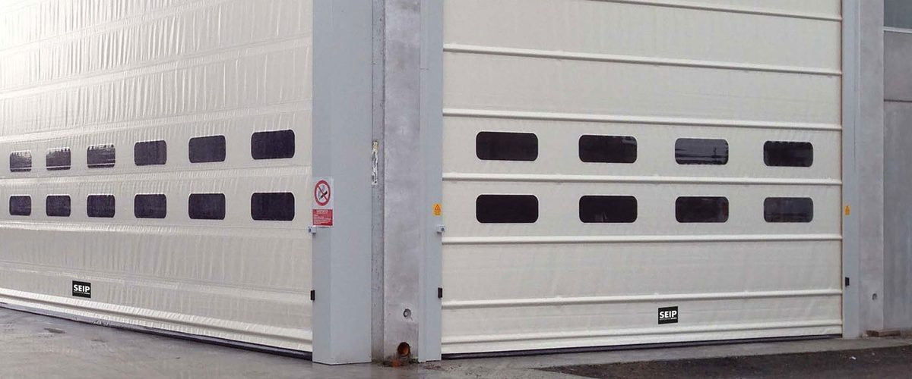
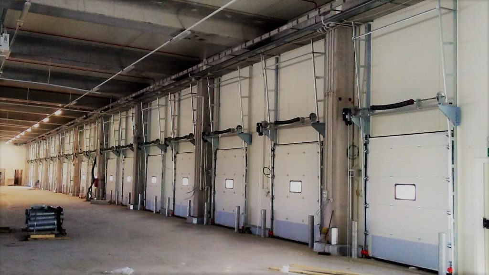
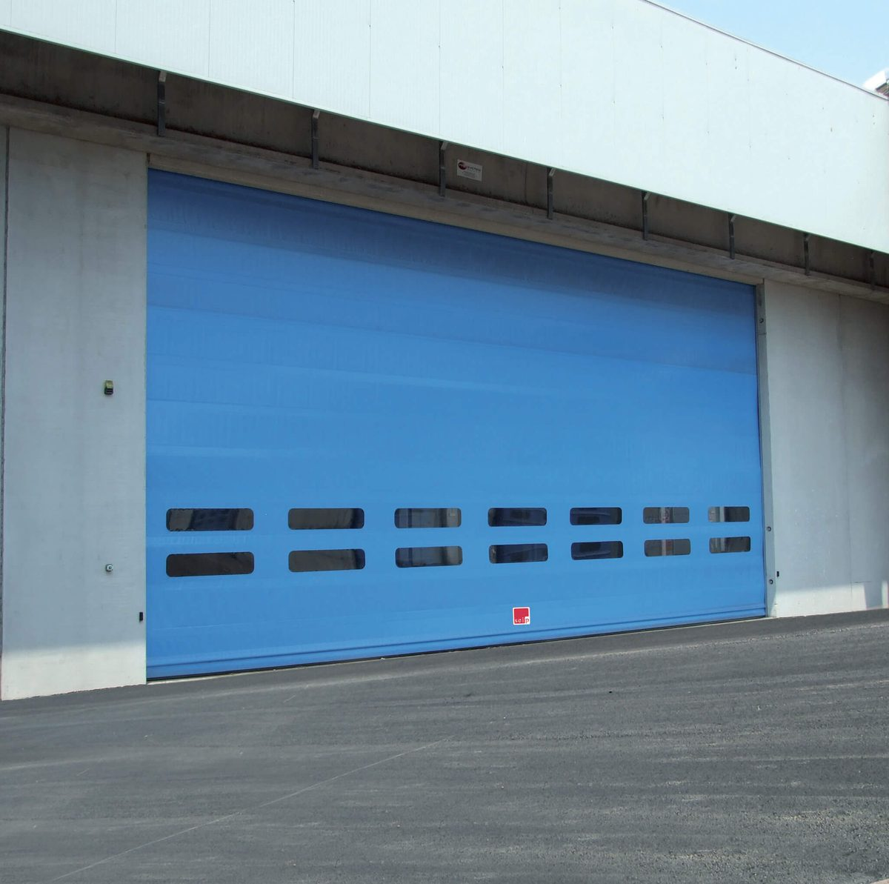
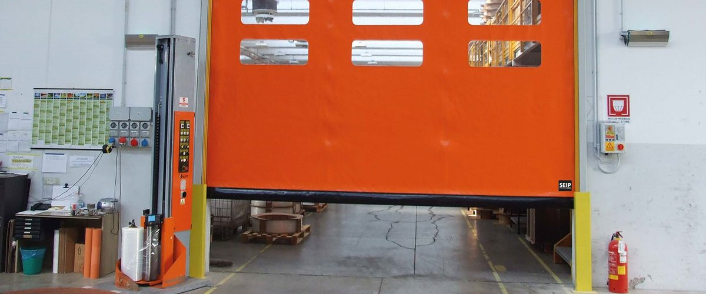
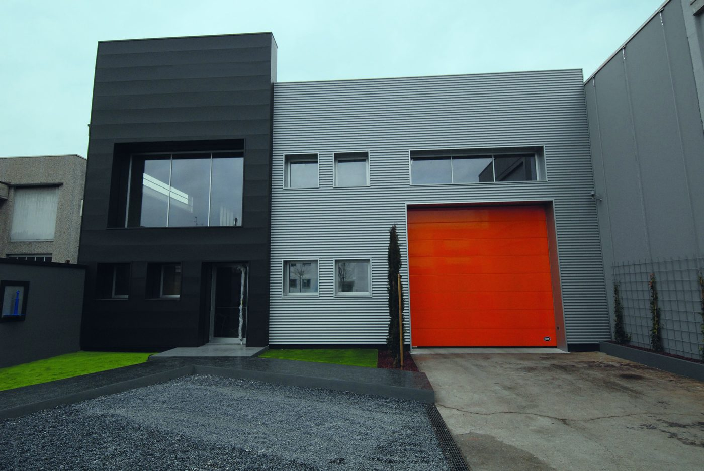

Industrie-Sektionaltor
Läuft senkrecht nach oben und unter die Decke. Wärmegedämmt und in großen Formaten lieferbar.
- Wärmegedämmte Paneele
- Große Formate für Hallentore
- Verglasung optional
Sektionaltore, Schnelllauftore, Rolltore und Falttore für Halle, Logistik und Werkstatt, dazu Wartung, UVV-Prüfung und Reparatur mit 23 eigenen Servicetechnikern.

Steht ein Tor still, steht oft auch der Betrieb still. Deshalb planen wir Industrietore nicht nur nach Öffnungsmaß, sondern nach Taktung, Beanspruchung und Umgebung, und halten sie mit eigenen Technikern zuverlässig in Betrieb.
Taktfrequenz, Öffnungsgeschwindigkeit und Platzverhältnisse entscheiden, welches Tor für Ihre Halle sinnvoll ist. Wir beraten Sie dazu vor Ort.

Läuft senkrecht nach oben und unter die Decke. Wärmegedämmt und in großen Formaten lieferbar.

Öffnet in Sekunden. Hält Wärme und Zugluft draußen und beschleunigt den Durchsatz an Ihrer Öffnung.

Rollt platzsparend über der Öffnung auf. Rollgitter zusätzlich mit Durchsicht und Belüftung.

Faltet sich seitlich zusammen. Bei sehr großen und ungewöhnlich geformten Öffnungen oft die einzige Lösung.

Industrietore unterliegen der regelmäßigen Prüfpflicht. Unsere 23 Servicetechniker übernehmen die UVV-Prüfung, dokumentieren den Zustand und beheben Mängel direkt vor Ort, wo es möglich ist.
Mit einem Wartungsvertrag planen Sie Prüftermine fest ein und sichern sich im Störfall eine schnelle Reaktion.
Wartungsvertrag anfragenVon der Standardhalle bis zur Sonderöffnung fertigen wir Ihr Tor auf das genaue Maß.
Elektroantrieb mit Radar, Induktionsschleife oder Ampelanlage für hohe Taktfrequenzen.
Regelmäßige Sicherheitsprüfung durch unsere Servicetechniker, mit Dokumentation für Ihre Unterlagen.
Gedämmte Paneele und Dichtungen für temperierte Hallen und geringeren Energieverbrauch.
Feste Prüftermine, dokumentierte Zustände und bevorzugte Reaktionszeit im Störfall.
Schnelle Hilfe im Störfall durch 23 eigene Servicetechniker, mit Ersatzteilen für gängige Fabrikate.
Richtwerte für die Planung. Die genaue Ausführung legen wir beim Aufmaß mit Ihnen fest.
| Bauarten | Industrie-Sektionaltor, Schnelllauftor, Rolltor, Rollgitter, Falttor |
|---|---|
| Breite und Höhe | Nach Maß, große Hallentore und Sonderformate auf Anfrage |
| Material | Stahl, Aluminium, Kunststoff-Lamellen (Schnelllauftore) |
| Zielgruppen | Logistik, Werkstätten, Feuerwehr und Rettungsdienste, Landwirtschaft, Parkhäuser |
| Steuerung | Handsender, Codetaster, Radar, Induktionsschleife, Ampelanlage |
| Sicherheit | Lichtschranken, Sicherheitsleisten, UVV-Prüfung nach Vorgabe |
| Wartung | Einzelprüfung oder Wartungsvertrag mit festen Terminen |
| Leistung | Beratung, Aufmaß, Lieferung, Montage, Wartung und Reparatur |
Das hängt von Öffnungsmaß, Taktfrequenz und Nutzung ab. Bei häufiger Durchfahrt empfiehlt sich ein Schnelllauftor, bei seltener Nutzung reicht oft ein Sektionaltor. Rolltore und Falttore kommen bei besonderem Platzbedarf oder Sonderformen zum Einsatz. Wir beraten Sie dazu vor Ort.
Kraftbetätigte Tore müssen regelmäßig durch eine befähigte Person geprüft werden. Mit einem Wartungsvertrag übernehmen unsere Servicetechniker diese Prüfung für Sie und dokumentieren das Ergebnis.
Kunden mit Wartungsvertrag erhalten eine bevorzugte Reaktionszeit. Unsere Servicetechniker klären telefonisch die Ursache und rücken bei Bedarf mit Ersatzteilen für gängige Fabrikate aus.
Ja. Wir warten und reparieren auch Tore, die nicht von uns geliefert wurden, sofern Ersatzteile verfügbar sind. Sprechen Sie uns einfach an.
Erzählen Sie uns, wie Ihre Anlage aussieht. Wir melden uns innerhalb eines Werktags.